Estrutura e proporção
Harmonização Facial
Reequilíbrio tridimensional dos contornos de mandíbula, mento, região malar e têmporas com ácido hialurônico de reologia específica, corrigindo assimetrias e sustentando a face sem alterar sua identidade.
Harmonização facial e corporal planejada para respeitar seus traços, devolver firmeza tecidual e realçar sua beleza sem excessos. Cada protocolo une a visão integrada de Cirurgião-Dentista, Farmacêutico e Biomédico.
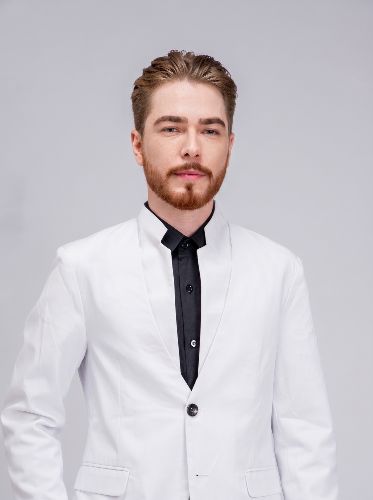
Dr. Vinicius Wroblewki
Harmonização Facial e Corporal
Nenhum procedimento é indicado de forma isolada ou padronizada. Na avaliação clínica, analisamos estrutura óssea, qualidade dérmica e dinâmica muscular para definir a conduta mais segura e elegante.
Estrutura e proporção
Reequilíbrio tridimensional dos contornos de mandíbula, mento, região malar e têmporas com ácido hialurônico de reologia específica, corrigindo assimetrias e sustentando a face sem alterar sua identidade.
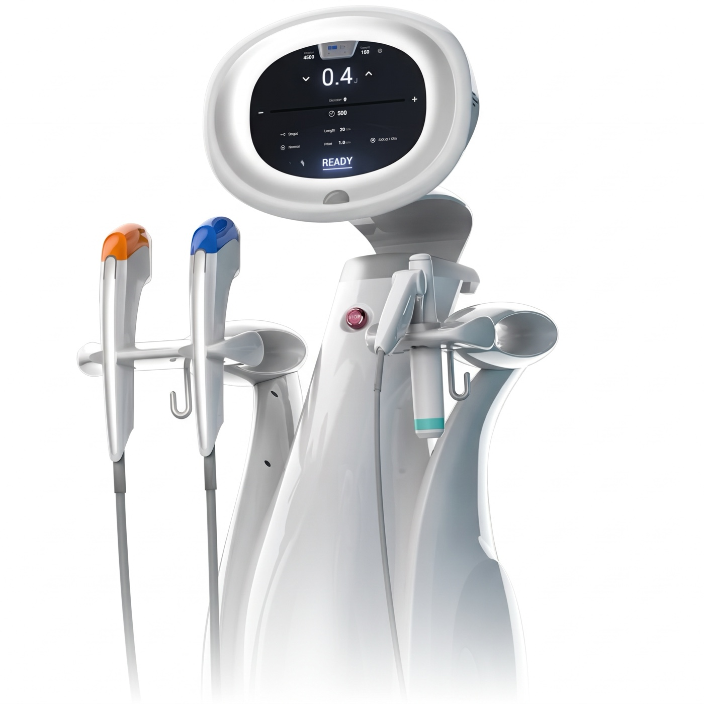
Lifting facial e contorno corporal
Ultrassom micro e macrofocado que atua até a camada muscular (SMAS) e tecido adiposo. Promove efeito lifting sem cortes, reduz papada, arqueia o olhar e trata flacidez e gordura localizada corporal.
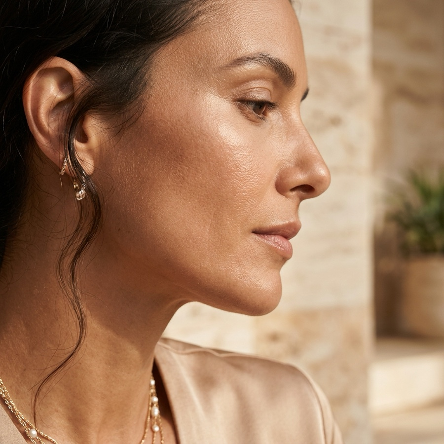
Firmeza dérmica e poupança de colágeno
Substâncias biocompatíveis que despertam os fibroblastos a produzirem colágeno novo de forma gradual. Devolve espessura, firmeza e viço à pele da face, pescoço, colo e áreas corporais com flacidez.
Prevenção e suavização dinâmica
Aplicação estratégica nos pontos de hiperatividade muscular da testa, glabela, lateral dos olhos e pescoço (efeito Nefertiti). Suaviza rugas de expressão mantendo a naturalidade do olhar e do sorriso.
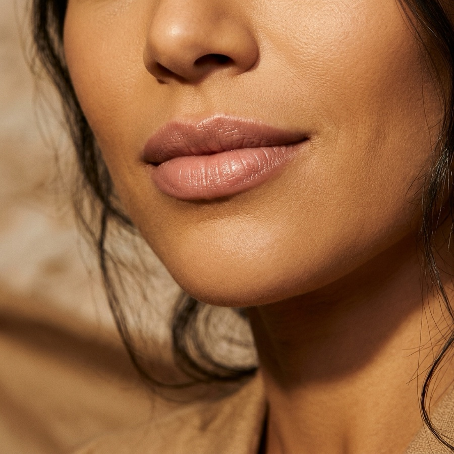
Escultura e hidratação anatômica
Desenho refinado do contorno labial, definição do arco do cupido, correção de assimetrias e reposição de volume na medida exata da harmonia dentofacial, sem projeções artificiais.
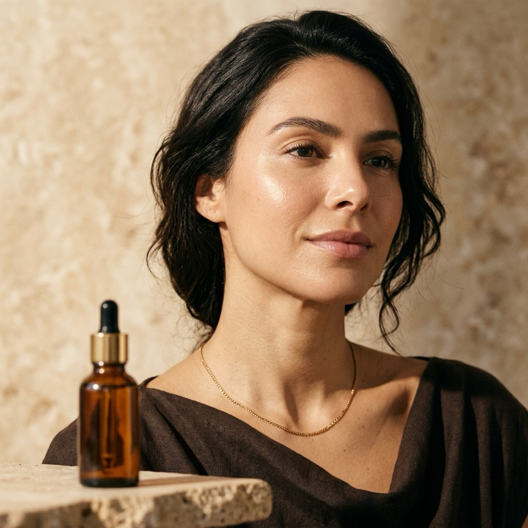
Controle pigmentar e luminosidade
Associação farmacêutica de ativos despigmentantes em consultório e home care personalizado para controle seguro de melasma, manchas solares e hiperpigmentações pós-inflamatórias sem efeito rebote.
A melhor harmonização é aquela em que todos percebem que você está mais radiante e descansada, sem identificar exatamente o que foi feito. Compare os casos documentados em consultório.
Quando associamos bioestimulação de colágeno, ultrassom microfocado e gerenciamento das linhas de expressão, recuperamos o suporte profundo da face e do pescoço com acabamento inteiramente natural.
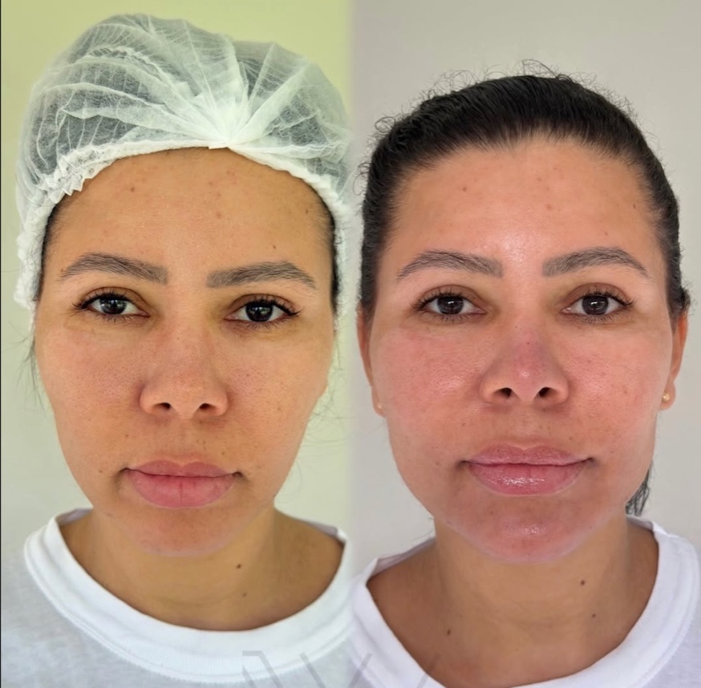
Equilíbrio entre terço inferior, projeção de mento, lábios e luminosidade da pele com resultado leve e simétrico.
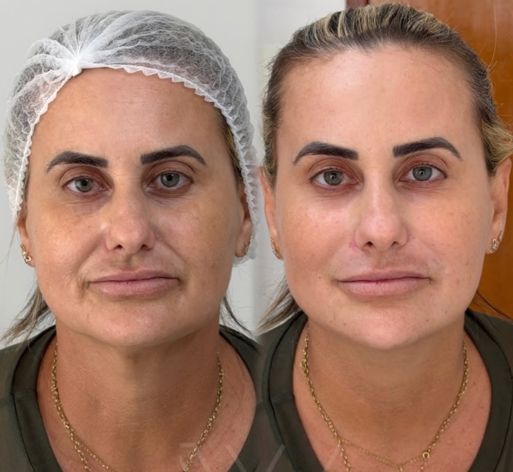
Reposicionamento tecidual, atenuação do sulco nasogeniano e redução do aspecto de cansaço ao redor dos olhos.
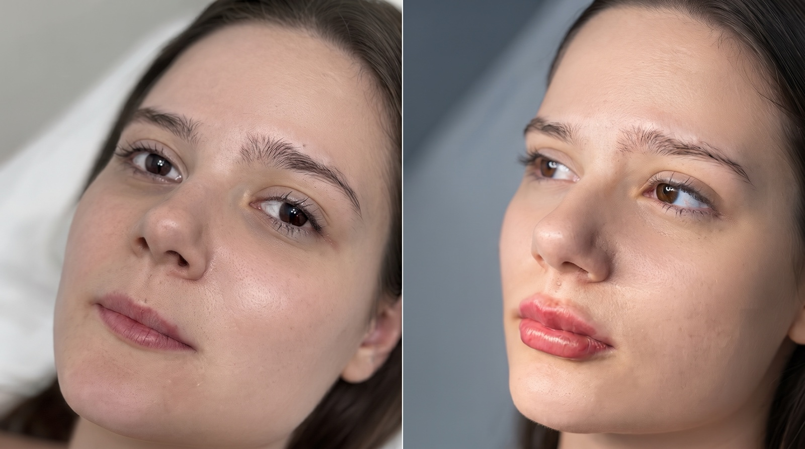
Definição do arco do cupido, contorno nítido e volume proporcional à anatomia delicada do rosto.
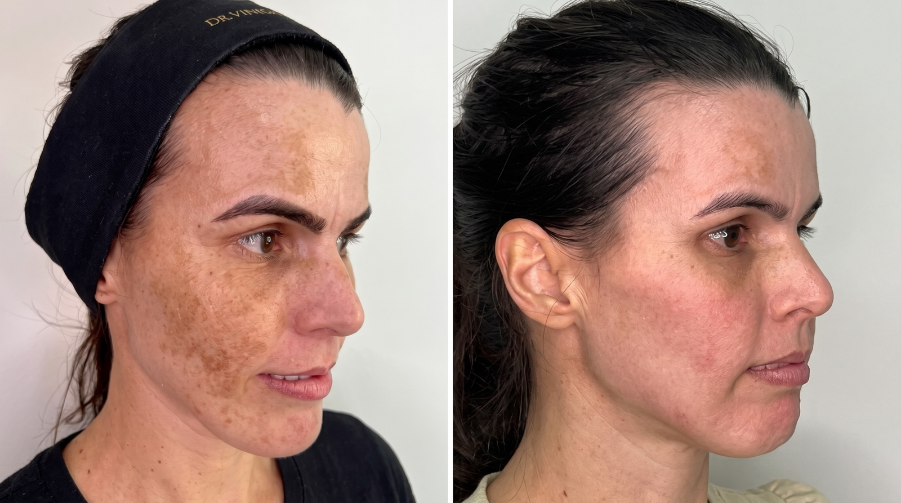
Uniformização acentuada do tom da pele na região malar e frontal com recuperação da barreira cutânea.
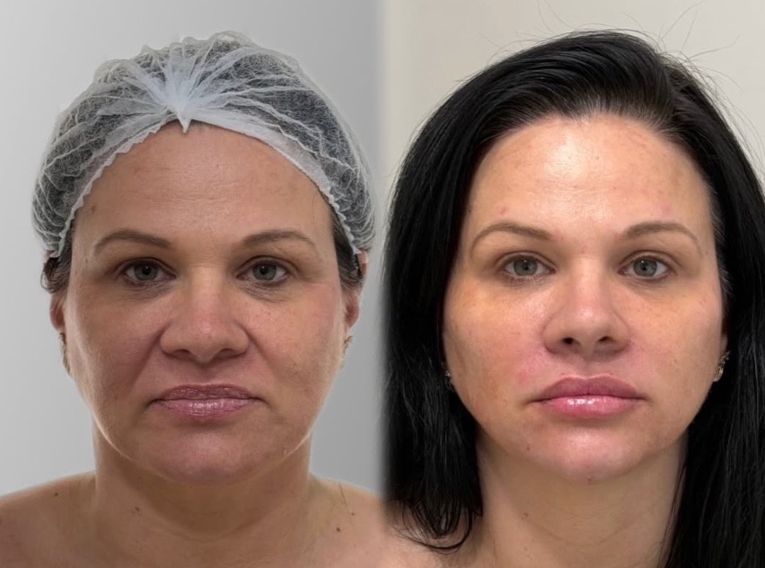
Elevação dos tecidos da face média, melhora do contorno inferior e revitalização labial integrada.
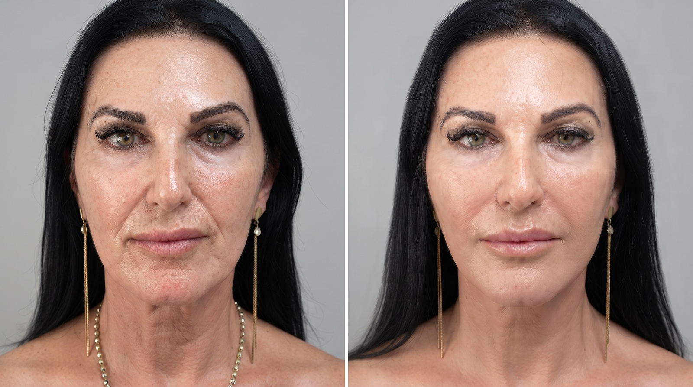
Associação de estímulo muscular, colágeno e suavização de linhas para um semblante firme e sereno.
Imagens clínicas reais divulgadas com autorização expressa dos pacientes, em conformidade com as normas éticas dos conselhos de classe. Cada organismo apresenta resposta biológica única; os protocolos são definidos apenas após avaliação presencial.
Por meio de ponteiras micro e macrofocadas que atingem diferentes profundidades do tecido, o Ultraformer cria pontos de coagulação térmica que contraem as fibras existentes e estimulam colágeno novo por meses após a sessão.
Efeito lifting da face e sobrancelhas, ancoragem muscular, afinamento de bochechas sem cortes e redução da gordura submentoniana (papada).
Tratamento direcionado da flacidez e gordura localizada em abdômen, flancos, braços, região interna das coxas e contorno dos joelhos.
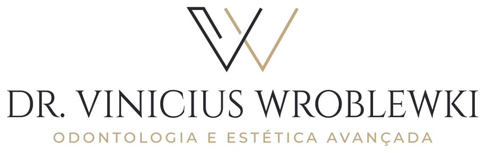
@drvinicius_wroblewkiA estética avançada exige muito mais do que domínio de técnica de aplicação. Para entregar resultados previsíveis, duradouros e biologicamente seguros, o Dr. Vinicius Wroblewki construiu uma trajetória acadêmica rara, unindo três graduações complementares na área da saúde.
Essa base multidisciplinar permite compreender simultaneamente cada milímetro da estrutura anatômica da face, o comportamento bioquímico de cada ativo injetável ou despigmentante e a resposta regenerativa das células da sua pele.
Domínio cirúrgico da anatomia craniofacial, vascularização, inervação, suporte ósseo e harmonia entre lábios, sorriso e terços da face.
Precisão farmacológica na escolha da reologia ideal dos preenchedores, diluições seguras e prescrição personalizada para melasma e manchas.
Visão aprofundada de fisiologia tecidual, neocolagênese e resposta inflamatória controlada em protocolos faciais e corporais.
Conversamos sem pressa sobre o que incomoda você no espelho, avaliando estrutura óssea, qualidade da pele, simetria em repouso e em movimento.
Você recebe um cronograma transparente priorizando o que trará o resultado mais elegante e natural, sem indicações desnecessárias.
Procedimentos realizados com protocolos rigorosos de conforto anestésico, biossegurança e suporte próximo no pós-atendimento.
Selecione o que você deseja avaliar e a cidade mais próxima. Nossa equipe receberá sua mensagem já organizada para agilizar os horários disponíveis.
Atendimento com hora marcada, privacidade e tecnologia completa tanto na capital capixaba quanto em Águia Branca.
Av. Américo Buaiz, 500, Ed. Empresarial Enseada, Sala 804 — Enseada do Suá, Vitória - ES, 29050-902
Endereço demonstrativo — confirme a sala no agendamentoAv. João Quiuqui, 320, Ed. Espaço Saúde, Sala 201 — Centro, Águia Branca - ES, 29795-000
Endereço demonstrativo — confirme a sala no agendamentoFicou com alguma pergunta específica sobre o seu caso? Chame diretamente pelo WhatsApp para conversar com nossa equipe.
Resultados exagerados acontecem quando se utiliza volume onde a pele precisava de firmeza ou tração muscular. No protocolo do Dr. Vinicius, priorizamos primeiro a estrutura e a qualidade do colágeno (com Ultraformer e bioestimuladores) e utilizamos preenchedores em quantidades precisas, respeitando suas proporções individuais.
A toxina botulínica relaxa a musculatura que forma rugas dinâmicas ao sorrir ou franzir a testa. O bioestimulador incentiva seu próprio organismo a produzir colágeno para devolver firmeza à pele. Já o preenchimento com ácido hialurônico repõe suporte estrutural ou contorno em regiões específicas, como lábios, mento e malar.
A grande maioria dos protocolos — incluindo Ultraformer, toxina botulínica e bioestimuladores — permite retorno imediato às atividades cotidianas, exigindo apenas cuidados simples como fotoproteção e evitar exercícios físicos intensos nas primeiras 24 a 48 horas, conforme orientação individual.
Sim. Graças ao planejamento farmacêutico personalizado, ajustamos a concentração e o mecanismo de ação dos ativos de acordo com o fototipo da sua pele e a intensidade solar do período, tratando e controlando o pigmento com segurança durante todo o ano.
Todos os agendamentos são centralizados pelo WhatsApp +55 27 99897-5841. Basta informar a cidade de sua preferência para consultar as próximas datas de atendimento do Dr. Vinicius em cada unidade.